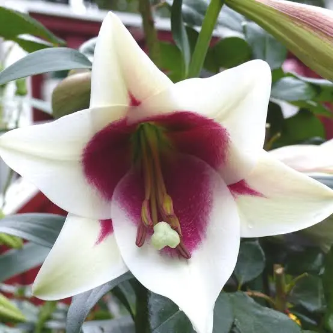

Introduction
Lily is a beautiful flowering plant known for its large, showy, and fragrant flowers. Belonging to the Liliaceae family, lilies are native to the temperate regions of the Northern Hemisphere and are widely cultivated for gardens and bouquets.
Botanical Description
- Scientific Name: Lilium spp.
- Family: Liliaceae
- Type: Perennial herbaceous plant
- Leaves: Long, narrow, and arranged alternately
- Flowers: Large, trumpet-shaped, fragrant, in various colors
- Fruits: Capsule containing small seeds
Uses
- Ornamental: Gardens, bouquets, and floral arrangements
- Perfume: Extracted for fragrance
- Medicinal: Used in traditional remedies for skin and respiratory problems
- Cultural: Symbol of purity, renewal, and devotion
- Edible: Some lily bulbs are used in Asian cuisines
Interesting Facts
- Lilies are often associated with purity and refined beauty.
- There are over 100 species of lilies worldwide.
- Lilies are commonly used in religious ceremonies and weddings.